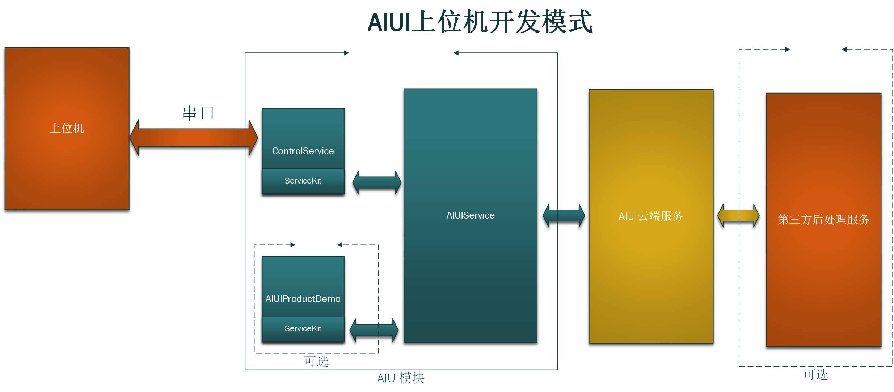

4.3 上位机模式¶
适用：上位机和AIUI模块通过串口通信，适用于有屏幕需求或硬件扩展的要求（如机器人，智能家居等）
4.3.1 结构¶
ControlService充当AIUIService和上位机之间的中介，一面负责将AIUI的结果通过串口发送给上位机，一面将上位机通过串口发送的指令发送到AIUI。
AIUIProductDemo是个可选的选项，因为如果在上位机上对结果进行解析播放，那么AIUI模块上的AIUIProductDemo的播报就不必要了。
上位机模式和核心板模式在开放集成时有诸多类似之处。
4.3.2 串口协议及数据定义¶
参见9.1 AIUI串口协议。
4.3.4 调用流程¶
根据9.1 AIUI串口协议，在开发包中有串口协议Android SDK的实现。
上位机开发调用流程可以参考该SDK的代码示例。
完整流程参考开发包中UART下的UARTKitCtrDemo源码。
其实流程简单一点理解就是通过串口收发AIUI消息，获取结果和控制AIUI，与AIUI SDK理解类似。
4.4.4 其他平台¶
如果上位机是Android的话，那上位机集成开发包中串口SDK UARTKit就能很方便的开发。
如果上位机是其他平台，可以先通过AIUI串口历险记熟悉AIUI 串口协议的一些具体内容，再参考串口Android SDK的示例熟悉处理流程。